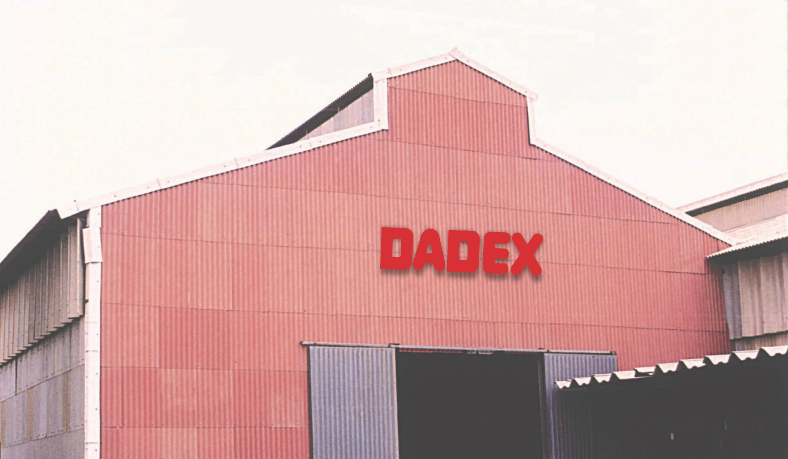
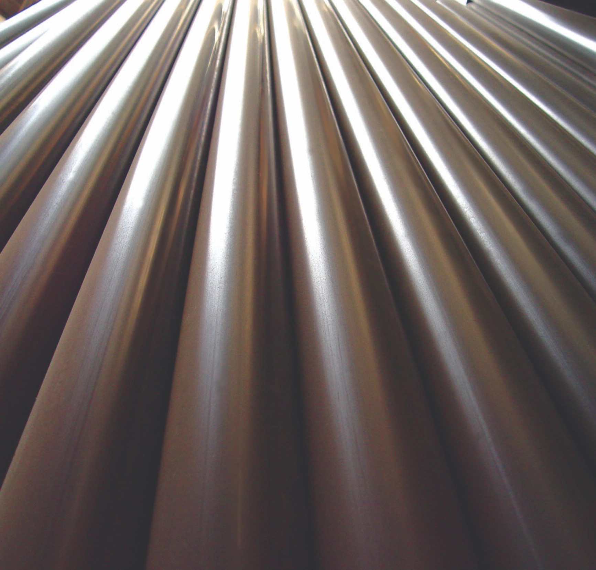
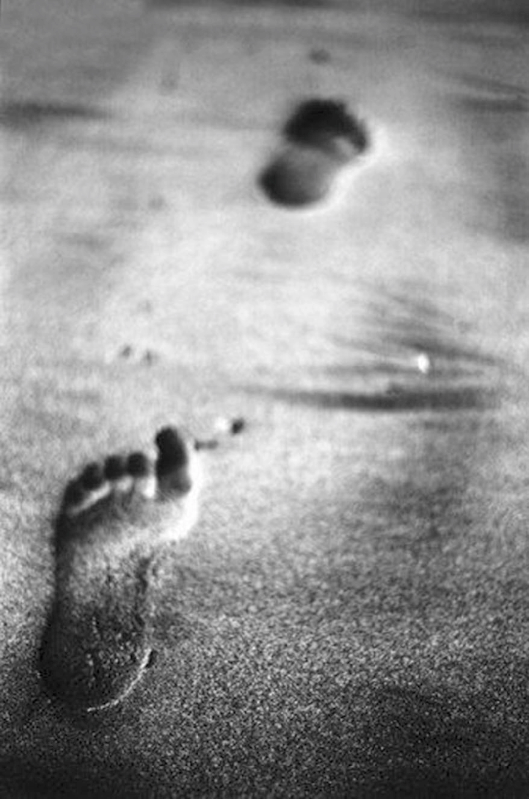
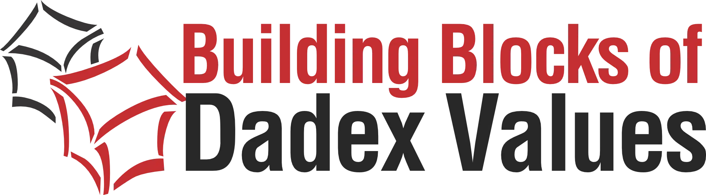
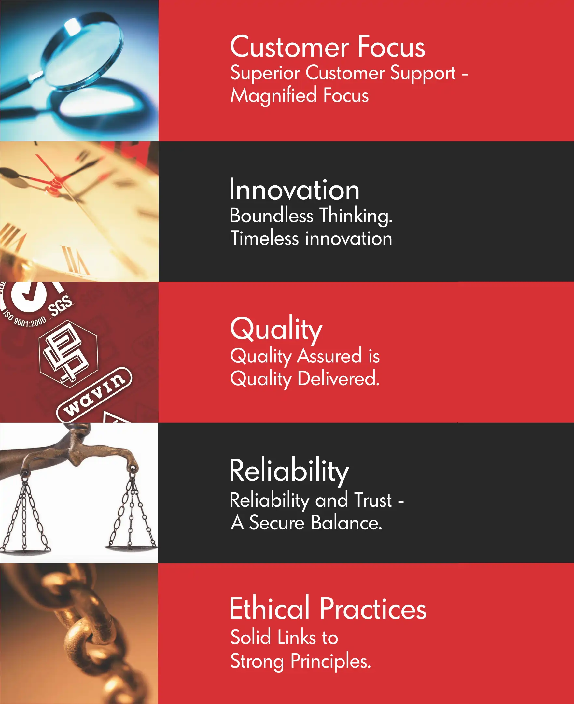

The Dadex Story
A journey of trust from a vision to industry leadership. Since 1959, Dadex has grown from a pioneering manufacturer into a diversified provider of piping, drainage, and utility solutions.
Over six decades of
engineering experience.
Dadex Eternit Limited was incorporated as a public limited company in 1959 and is listed on the Pakistan Stock Exchange. The company manufactures and sells construction materials, principally piping systems and allied products, and also undertakes the merchandising of imported pipe fittings, accessories and other building products.
A pioneer of thermoplastic piping systems in Pakistan, Dadex has expanded from its early fibre cement roots into a broad portfolio serving construction, housing, architecture, telecommunications and infrastructure applications.

A company built around
essential infrastructure.
Dadex combines manufacturing experience, technical capability and market reach to support public, industrial, commercial and private-sector requirements.
Established
Decades of Trusted Excellence
Listed Company
Incorporated in Pakistan as a public limited company listed under the symbol DADX.
Factories
Hyderabad and Sundar Industrial Estate, Lahore.
Sales Offices
Karachi, Lahore, Multan, Faisalabad, Islamabad.
Core Materials
UPVC, PP-R, PP-RCT, PE and PP thermoplastic systems.
Certifications
ISO 9001, ISO 14001, ISO 45001 and PSQCA certified.

Kassim Dada (1919–2001)
A legacy of integrity, fairness and the sanctity of promise.
Kassim Dada, the Founder Chairman of Dadex, was a man of principles — an astute businessman, a philanthropist, an avid traveller and a man committed to basic values. His individuality influenced many to add meaning and significance to their own lives.
Following the simple principle of fairness, clarity and sincere application to all things in life, he worked to build a company recognised not only for the quality of its work and products, but for its integrity.
Discover Our HeritageOur Vision
The destination Dadex is built to reach - for every stakeholder we serve.
“…to be the most valued company for all stakeholders, renowned for customer focus, innovation, quality, reliability & ethical practices.”

Our Mission
Our mission translates the Dadex vision into priorities for customers, quality, people and shareholder value.
- Provide unparalleled service and best value through a responsive and cost-effective supply chain.
- Increase penetration in piping systems through new channels and market opportunities.
- Provide quality products through international standards and best practices.
- Set new trends through innovative marketing and manufacturing.
- Follow business ethics, comply with SH&E standards and contribute responsibly to society.
- Develop talent in a competitive environment where people can excel and grow.
- Strive to maximise shareholder value through sustained profitable growth.


Values that shape how we work
Customer focus, innovation, quality, reliability and ethical practices form the foundation of the Dadex approach.

Global collaboration,
local manufacturing.
Dadex works with established international partners to bring proven technologies and standards to the Pakistani market.
Wavin
, NetherlandsTechnical collaboration for thermoplastic piping systems in Pakistan.
Effast
, ItalyCollaboration for UPVC pressure piping systems.
Magnaplast
, PolandCollaboration supporting Dadex's specialised piping portfolio.
Standards
we stand behind.
Dadex is committed to quality, reliability and ethical practices, supported by recognized management systems and standards.
Quality & compliance